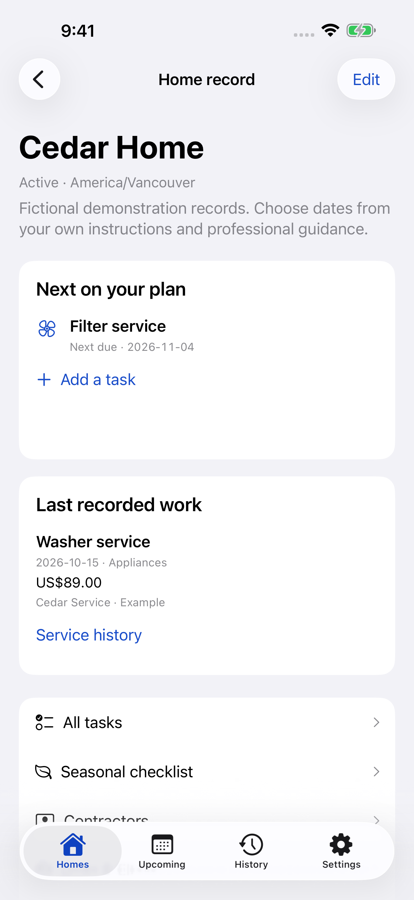
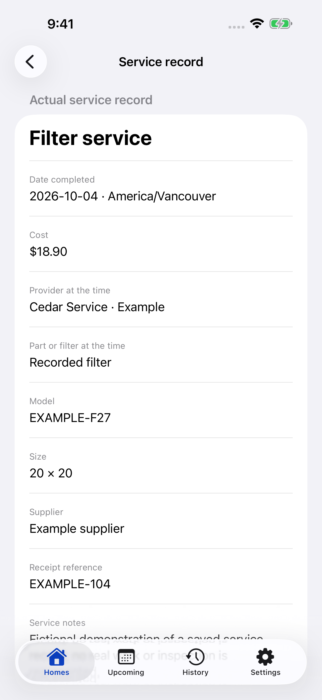
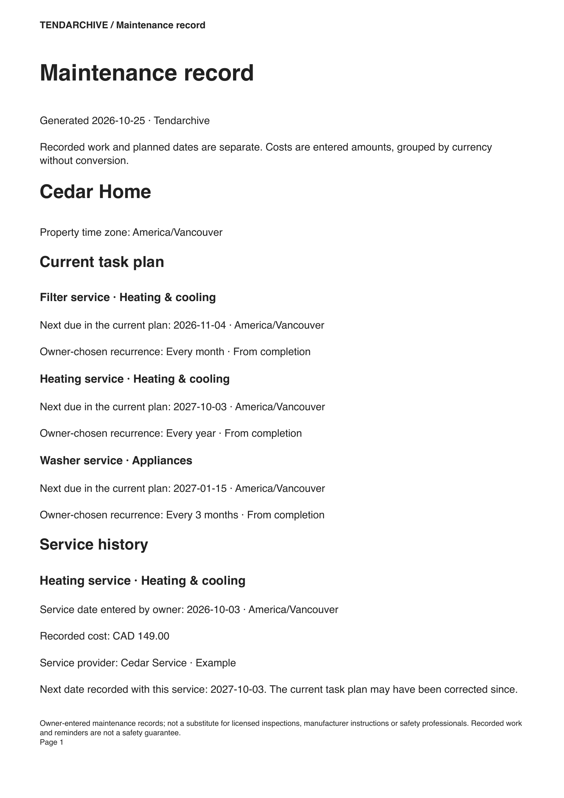

Your home. Your schedule.
Add an editable starter or a custom task. Choose one date, or a recurrence that follows completion or your original schedule.
Home maintenance · iPhone + iPad
The service date, the cost, the right filter and the next due date. Tendarchive keeps your home’s maintenance record together.
Version 1.0 is in production · Not yet released
No account · Local records · Your dates

Choose dates from your own instructions. Record what happened. Retrieve the details when it is time to do it again.
Add an editable starter or a custom task. Choose one date, or a recurrence that follows completion or your original schedule.
Keep the actual date, cost and currency, provider, part/model and receipt reference. Review the next due date before saving.
Search retained history. Open a saved source. Preview a complete maintenance PDF with private fields you choose.
More than a checked box
Keep those answers with the service, even when your contractor or part library changes later.


A record you can keep
Free includes a complete basic maintenance PDF and a full attachment backup. Pro adds filtered reports, selected photo pages and CSV.
Private address, notes, contact details and receipt references start excluded from reports. Full backups include all retained records and sources, including Trash. Protect the copies you save.
Screen examples are fictional. A maintenance record is not an inspection certificate.
Built for iPhone and iPad
Actual native screens and PDF output, shown with original fictional examples.
Apple displays the current localized price before purchase. Existing records and retained source files stay accessible if Pro ends.
Free
Core service facts, retained history, editable starters, custom tasks, generic reminders, complete basic PDF, corrections, Undo, recoverable Trash and full backup/recovery.
Tendarchive Pro
More homes and tasks within device limits, new source attachments, extra editable starters, detailed per-currency costs and custom PDF/CSV reports.
Annual is a one-year auto-renewing subscription. Lifetime is a one-time purchase for this app. Buying Lifetime does not cancel an existing annual subscription. Manage or cancel subscriptions with Apple.
A considered local tool
No developer account, backend, tracking, advertising or analytics. Optional local reminders use generic wording; iOS controls delivery. Sharing and backups happen only through your choices and selected providers.
Tendarchive is a reminder and record tool. Follow manufacturer instructions and qualified professional guidance. It does not provide repair diagnosis, recommended service intervals, an inspection certificate or a safety guarantee.